It worked.
Nobody used it.
One screen, one feature, one pilot, no sales. Once I moved the product from reproducing steps to producing outcomes, the single feature grew into a fincrime suite that sold.
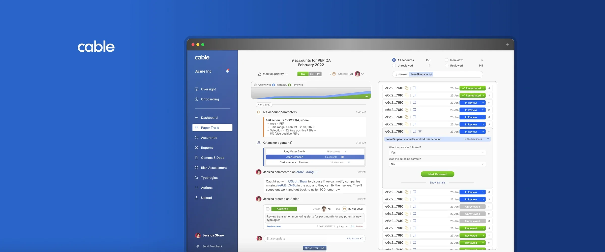
The product was the manual process, reproduced in software.
The team had built each step faithfully and neglected the outcomes behind them. That asked people to change how they work for a marginal gain, a tough trade. The product had to create value, not mirror it.
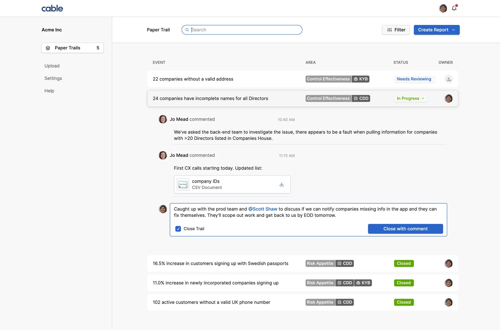
1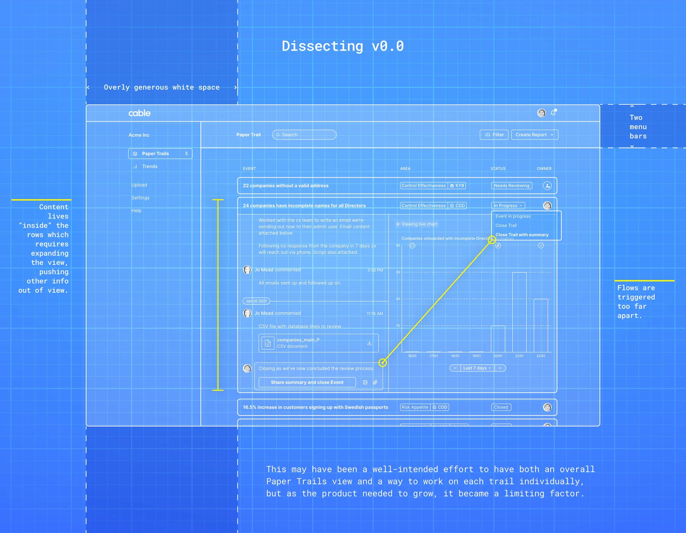
There was no blueprint to follow. I designed the first iterations on instinct, our pilot users and first principles.
I gave the one feature room, and the work a place to happen.
I broke up the single screen first. It blocked the two things the product needed: to grow, and to be worth using.
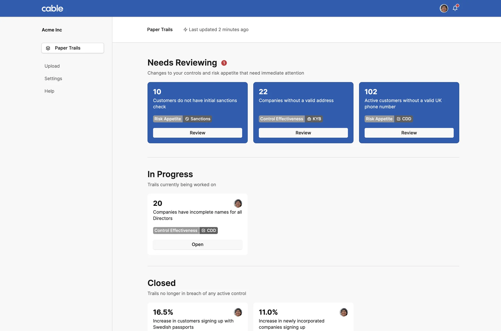
I gave Paper Trails, the whole reason the product existed, a high level view of all trails. Each trail is a card associated with its state, a pattern users already knew.
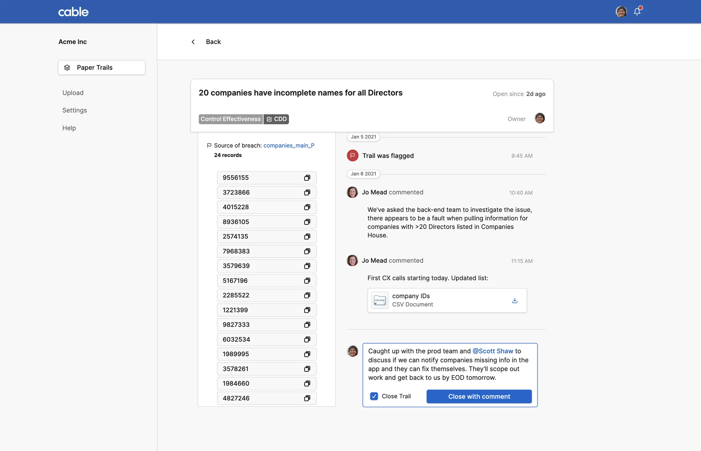
2Then I gave each trail a view of its own. Fincrime tooling was new ground, so our pilot partners had little reference for what to ask for. Something worth reacting to changed the quality of what came back.
Designed for outcomes, not steps. The product blossomed.
I stopped asking users how they did the work. I asked what outcome they needed, how they were getting there, and whether a better route existed.
I kept the workshops frequent. These were not technical people, so the start was slow, but their insight gradually sharpened and the asks grew with the relationship. Soon small tweaks to existing elements became full features, and the roadmap took shape as we went.
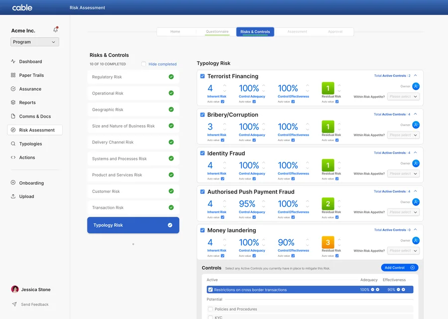
Risk Assessment
Scored as you fill it in, locked once approved.
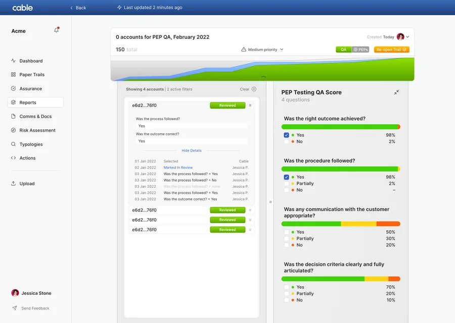
Reports
Sample, questions and score, ready for a regulator.
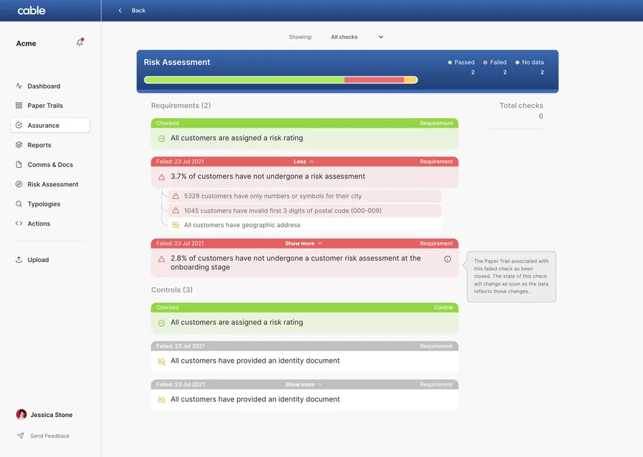
Assurance
Every account and transaction tested, continuously.
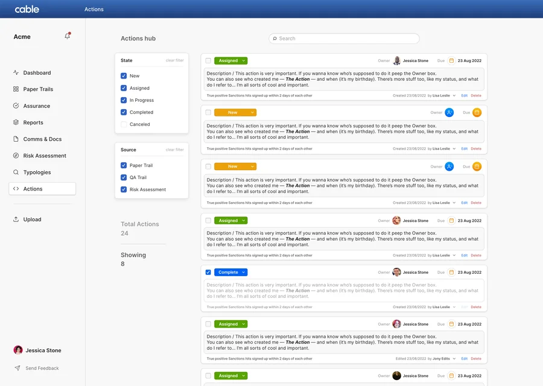
Actions
Every finding carries an owner and a date.
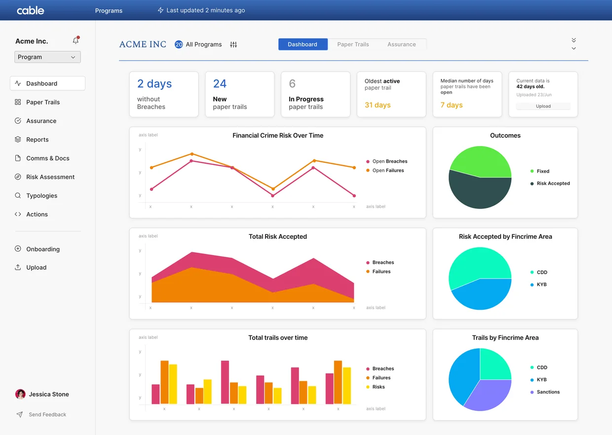
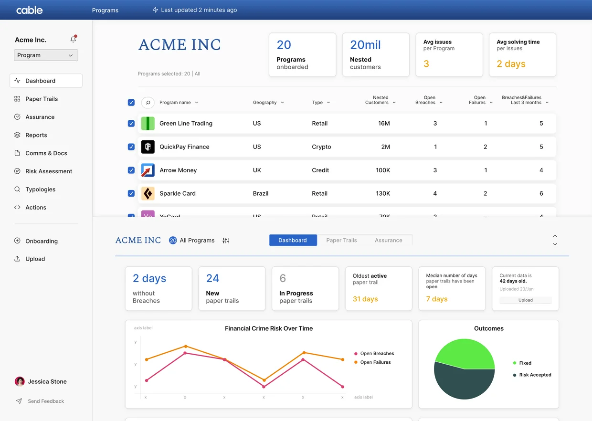
Oversight, a flagship on par with Paper Trails
The sponsor banks wanted Cable inside Cable: the same product pointed at the fintechs they oversee, so they could read those controls the way they read their own. Oversight (then Programs) put immediate strain on the UI.
A bag of features, rebuilt as one system.
A full rebuild was a hard sell. Oversight pushed it through: it was our most popular feature, and the banks’ interest in it was rising.
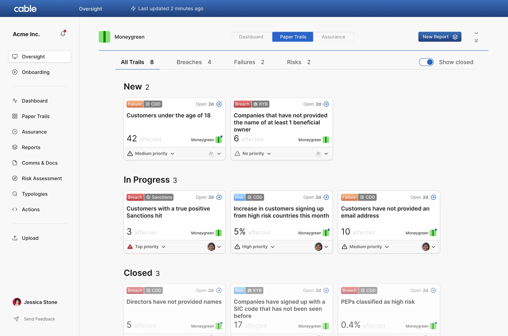
3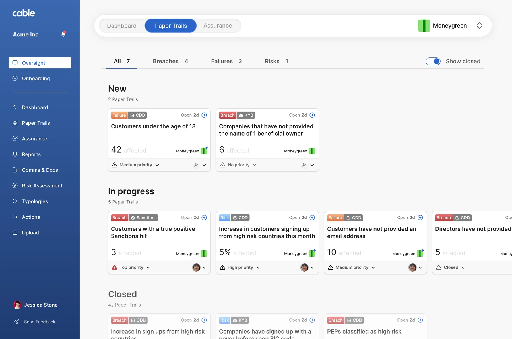
3I designed all of it at once, because by then I knew what the product had to be. I found the patterns doing the same job in different ways, kept the strongest of each, and extended it to cover every case. We rebuilt the information architecture and the code beneath it.
Working isn’t enough. It has to be worth switching to.
The suite was finished, solid and reliable, with the right amount of polish to be worth the price.
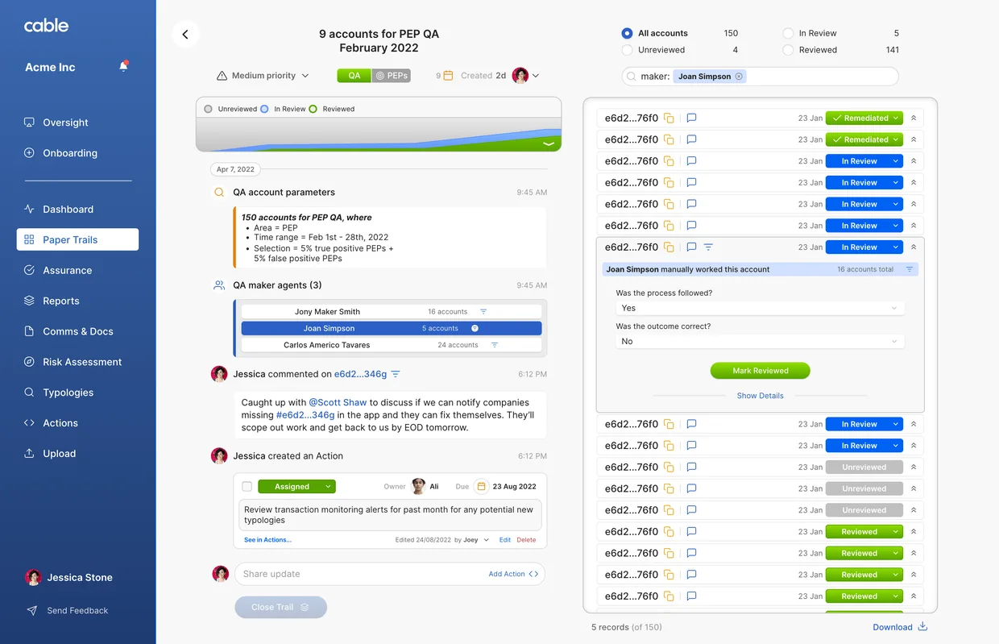
“Compliance officers are conservative people.”
Natasha Vernier, co-founder and CEO of Cable
The SPL podcast, 2023
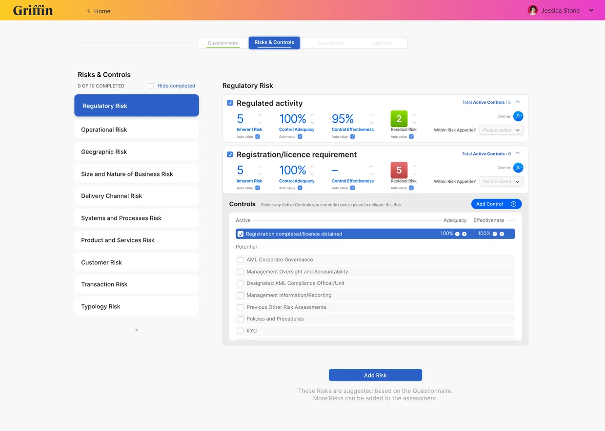
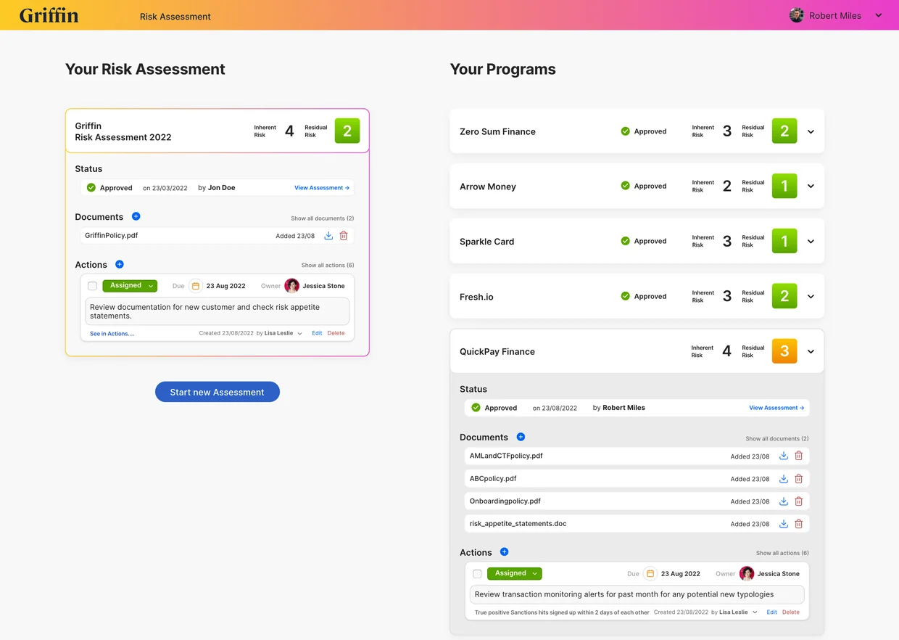
Tide, our pilot partner, converted first. Quaint Oak Bank, Griffin and Ramp followed, and in the years after, more than 50 banks and fintechs. Banks buy slowly, on trust, and on a return that outweighs the disruption of changing how people work. 3.0 cleared that bar.
Cable was acquired in 2026.
Design unlocked the value.
Value made it sell.